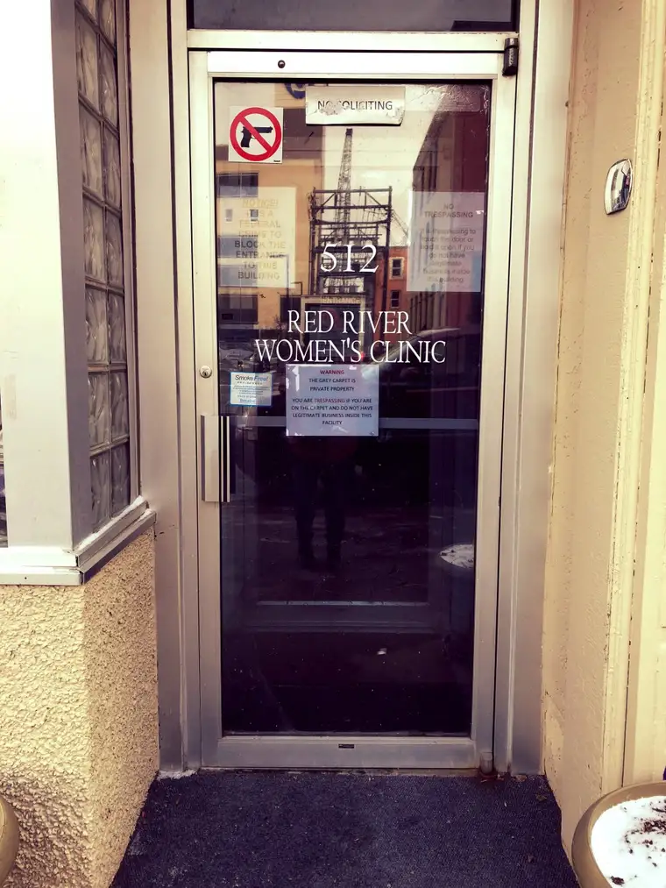

It used to be green, a color signifying life. After recent renovations, however, the “carpet” in front of our state’s only abortion facility was replaced with one bearing a more appropriate hue of gray, an ashen, non-color of death.Signs at the front door of this facility warn that the gray carpet should be avoided if you have no official business there. Stepping onto the gray carpet purposefully — or even by accident — can prompt a visit from local police.
For those who volunteer their time there as abortion escorts, that gray landing patch can provide shelter in inclement weather, and recently, it proved to do so for the three escorts who’d shown up on a slushy, sloppy afternoon.
When we prayer advocates first arrived, only one escort stood on the gray carpet. She was new. Not only had we never seen her before, but we could tell by the way she looked around, nervously and out of place, that it was not part of her normal routine.
Sometimes, we’ve been told, they come as the result of taking a women’s studies class at a local university and have been lured with the offer of extra credit. No matter what brings these young, naïve women — and men — to the sidewalk, they’ve been swayed into believing that by escorting women to their abortion appointment, they will come away heroes.
Of course, they’ve been misled.
After spending time there that day, I shared photos of the wet-snow-splattered sidewalk on Facebook, and a friend from Texas noted how struck she was by them. “I suppose it’s the location,” she wrote. “To think that killing is happening there right in the middle of a busy street, among other businesses, for all to see. Yet they don’t ‘see.’”
This friend used to work for a contraception-dispensing and abortion-referral Planned Parenthood facility. Now, whenever she’s near an abortion center, she can sense death, she said. “I can feel the killing, the pain and the evil around me. It’s a horrible feeling. It amazes me how others do not, will not, or cannot sense this.”
Just hours before, I’d shared with a fellow prayer advocate that no one who drives by, walks past, or stands on that sidewalk for any reason goes unaffected. Somehow, the soul just knows. It is why people react in different ways — with violent gestures and words, averting the eyes, or, in good moments, offering encouragement.
Seeing that young escort with the beautiful face and darting eyes, I knew that her soul recognized it was wrong to be there, and I prayed it would be her last visit. We all have free will.
Sadly, though, the more settled your feet become on that gray carpet, it seems, the harder it is to leave. It becomes like a magnet, or as I’ve described before, a portal. “Once you step foot on a certain side of the gray carpet,” I told my Texas friend, “it’s as if you’ve entered hell.”
We don’t like to think about hell, and some will say it’s cruel to mention it. But based on testimonies of post-abortive women, it seems fair to say that the gray carpet, off limits to the prayer advocates, marks the entry point of an eternal separation from God. Many souls that land on the gray carpet end up lost.
I wouldn’t return each week if I didn’t believe in hell, and that souls are at risk there. Nor would I come if I didn’t know, for a fact, that heaven is just as real and reachable. The repentant sinner can stand in God’s merciful grace.
Without a prayer presence on the sidewalk, those who are not aware will likely slip past, onto the gray carpet, and ever-closer to eternal unrest. For without grace, that day will become to them, forever, the beginning of a perpetual lie and cause for self-hatred, playing well into the evil one’s hands.
Some days, it feels like hell is freezing over on the sidewalk. I pray it will someday — that abortion will be unthinkable, and those who’ve pledged their souls to this industry will have an awakening. Until then, we will stand in the gap to love and remind them that even though hell is real, so, too, is heaven, and we don’t have to wait for the afterlife to bask in its healing rays.
[Note: I write about my experiences on the sidewalk Downtown Fargo on Wednesday, the day abortions happen at our state’s only abortion facility, for New Earth magazine — the official news publication of the Fargo Diocese. I hope you find “Sidewalk Stories” helpful in understanding the truth about abortion and how it plays out tragically each week here in Fargo, N.D. The preceding ran in New Earth’s Nov. 2018 issue.]